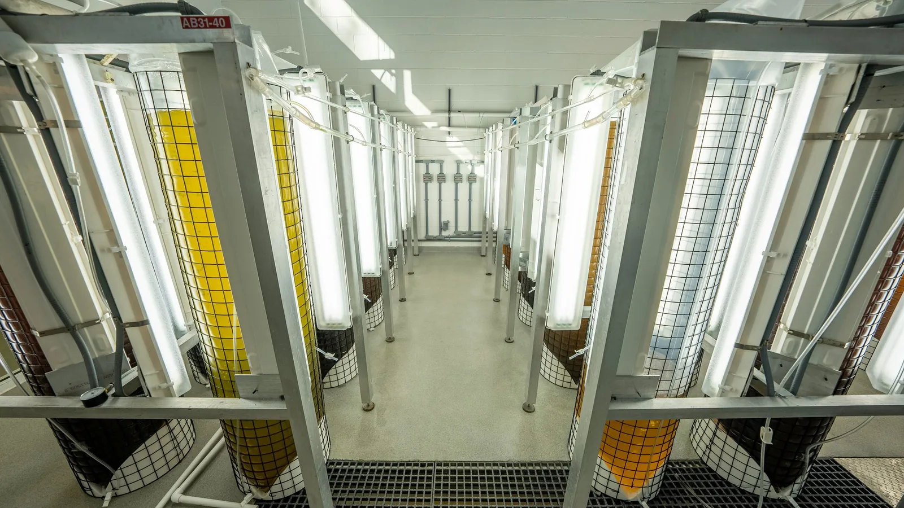

A founder's note
Nothing scales until it stops failing.
Ask anyone who runs a closed system about their worst night and you get the same story. Nothing looked wrong. Every gauge sat inside its band. Then it did not, and by then there was nothing left to do.
The gauges were not broken. They were doing what gauges do, which is report a consequence, and the consequence shows up last. The oxygen reading that finally trips at two in the morning is the end of something that started hours earlier, somewhere nobody has a probe, because you cannot put one on biofilter capacity or on how much reserve a population has left.
What made me think there was a company here is that the information is already in the building. It is spread thin across sensors the operator already paid for, in channels that only mean anything when you read them together against a model of the biology. Write the chemistry down, solve backwards, and the hidden state comes out with an honest band around it. Push it forward and you get hours instead of an alarm.
That is what we built. It reads what is already in the room and it touches nothing. Nobody should have to buy new instruments or hand over control of their farm to find out the biofilter is in trouble.
Everything below is the argument for why that matters, with the sources attached. Every result we have is on the record, including the ones where we were wrong, because a forecast nobody can check is worth nothing.
We started with fish farms and treatment plants because that is where the failures are expensive and somebody is awake at three in the morning watching for them. That work is worth doing for its own sake, and it is also the road to the hardest version of the problem: a sealed habitat with people inside it and no way to resupply. Same physics, no margin left. You do not get to that one by talking about it. You get there one system at a time.
Cameron Souza
Founder and chief executive, Orbital Ecology
The shape of it
The next century of food is grown in boxes.
Open systems are running out of room. Agriculture takes about 72 percent of freshwater withdrawals in many regions. Holding seafood consumption steady to 2050 needs 36 million tonnes more than the world produces now. A third of what is grown is lost or thrown away.
The answer the industry has converged on is the closed system, and a recirculating farm runs on 90 to 99 percent less water than the alternatives. The engineering exists. Operators are running it today. The constraint is somewhere else.
of freshwater withdrawals go to agriculture in many regions, while renewable water per person fell 7 percent in a decade.
FAO AQUASTAT · 2025
of additional aquatic animal food needed by 2050 simply to hold today's per-person consumption steady.
FAO SOFIA · 2024
of food lost after harvest before it reaches a shelf, then wasted in shops and homes.
FAO 2022 · UNEP Food Waste Index 2024
people in the United States living on a low income and more than a mile from a supermarket, or ten miles in a rural county.
USDA Economic Research Service · 2017
What we believe
Four things, in the order they matter.
Derisking is the unlock, not yield.
The biology works. What keeps money away is that one bad night can wipe out a year. A farm lost about 1.2 million dollars of stock overnight when circulation stopped. Another lost roughly 5 million to one failed filter. Insurers charge for what they cannot predict, and lenders lend against your worst plausible week. So an hour of real warning is worth more to this industry than a few points of yield.
Food should be grown where the people are.
A closed system needs power, water it mostly reuses, and someone who can keep it stable. It does not care about coastlines or latitude. About 39.5 million people in the United States live on a low income and far enough from a supermarket that getting there starts shaping what they eat. You could build next to them tomorrow. What stops people is not knowing whether the place will run reliably once it is up.
Waste is what you spend to cover a state you cannot see.
Aeration is 50 to 90 percent of the electricity at a conventional treatment plant, set conservatively because nobody measures nitrifier state. Feed goes in above requirement, oxygen above demand, light above need. Nobody is being wasteful here. They are buying insurance against something they cannot see. Show them the state and they can back the margin off without gambling.
A sealed habitat is the same problem with the tolerances removed.
A farm can flush a tank. A plant can bypass a reactor. A habitat with no resupply has neither option, so it is this problem with nowhere to hide. Get it right there and a fish farm is the easy case. That is what we mean by from the mud to the moon, and we mean it in that order.
How we hold ourselves to it
A forecast is only worth what its record is worth.
If you act on a number we gave you, you are taking a risk on our behalf. We would much rather you checked us than trusted us, so we try to make checking cheap.
- We publish the misses. Every evaluation reports where the engine would have been wrong on that operator's own history, next to where it would have been right.
- Every number resolves to a source, named, with the run count behind it.
- The engine is read-only. It connects to no control loop, so checking us costs an operator nothing but a data export, and the operator keeps the data.
What we do about it
Give the operator hours instead of an alarm.
The model is the product
The filter itself is textbook maths. The hard part, and the part that compounds, is describing one particular living system accurately enough for the filter to have something true to work on.
An estimate without an error bar is a guess
Every state we report carries its uncertainty, and every forecast carries the probability attached to it. A number with no band is not a measurement.
A forecast is not an alarm
An alarm tells you a line has already been crossed. A forecast tells you what is coming, roughly when, and how sure we are about it.
It has to run on the sensors you have
If we needed you to install new sensors, our model would not be doing its job. Everything we report comes out of readings you already take.
Sources
- S1FAO, 2025 AQUASTAT Water Data Snapshot. Agriculture accounts for about 72 percent of withdrawals in many regions; renewable freshwater per person fell 7 percent over a decade. fao.org
- S2FAO, The State of World Fisheries and Aquaculture 2024. Aquaculture production reached 130.9 million tonnes in 2022, surpassing capture fisheries for aquatic animals. Holding 2022 consumption to 2050 requires 36 million tonnes more, a rise of 22 percent. fao.org
- S3UNEP, Food Loss and Waste, citing FAO 2022 and the UNEP Food Waste Index Report 2024. 13 percent of food is lost after harvest before retail; 19 percent is wasted at retail and consumer level. unep.org
- S4USDA Economic Research Service, Food Access Research Atlas. Approximately 39.5 million people, 12.9 percent of the United States population, lived in low-income, low-access tracts as of the 2017 estimate. Low access is measured at one mile from a supermarket in urban tracts and ten miles in rural ones. ers.usda.gov
- S5Texas A&M AgriLife Extension, Water Usage in Recirculating Aquaculture and Aquaponic Systems. Recirculating systems use 90 to 99 percent less water than other aquaculture systems, with a target of under 1 percent daily exchange. tamu.edu
- S6Drewnowski et al., Processes 7(5):311, 2019, and the University of Michigan Center for Sustainable Systems US Wastewater Treatment Factsheet. Aeration accounts for 50 to 90 percent of plant electricity in conventional activated sludge. umich.edu
- S7Incident figures are as publicly reported: Proximar Seafood, June 2025 (The Fish Site / SalmonBusiness) and Sustainable Blue, November 2023 (WeAreAquaculture / CBC News). Both are cited as industry record. Neither operator is a customer of ours.
Evaluation
If the argument is right, the test is cheap.
Send a log you already keep. We run it blind against your own recorded incidents and report how much warning was available, event by event.
- No connection to any live system. No change to any control loop.
- No fee, and the file is deleted afterwards.
- You keep the full workings, including where we would have missed.

Validated against the reference models these fields use, and backtested on real commercial operating history. The engine only reads. It estimates and forecasts, and changes nothing in your plant.